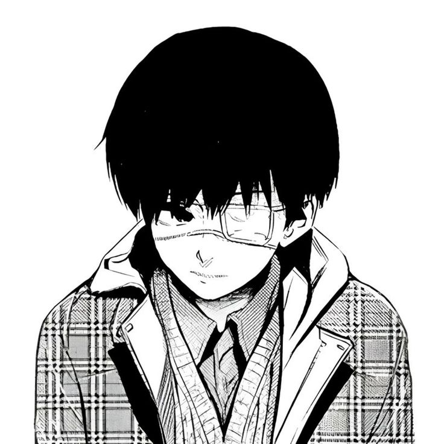

Personagem de Tokyo Ghoul

Ken Kaneki é o icônico protagonista da série de mangá e anime Tokyo Ghoul, criada por Sui Ishida. Ele é amplamente reconhecido como um dos personagens mais trágicos e complexos da história dos animes, ilustrando uma jornada de dor, perda de identidade e sobrevivência em um mundo dividido entre humanos e monstros
A história de Kaneki é dividida em transformações físicas e psicológicas marcantes, frequentemente associadas a mudanças na cor de seu cabelo.
"A jornada de Ken Kaneki em Tokyo Ghoul é uma profunda reflexão sobre dualidade, empatia, o peso do trauma e a aceitação de si mesmo."
"Quanto é mil menos sete?" ("Sen kara nana wa?")
A famosa frase é dita pelo vilão Yakumo Oomori (Jason) enquanto ele tortura o protagonista Ken Kaneki.
Todas as personalidades de Kaneki: Clica aqui bb